Fred the Fortune Telling Frog
Fred the Fortune Telling Frog

We can separate our electrical design into three tasks: interaction sequence, LED back wall, and LED flower. The interaction sequence was Fred’s main task and required an integrated circuit with an LED arcade button, servos, and Arduino Uno. For our LED arcade button in the interaction sequence, we used the following circuit design:
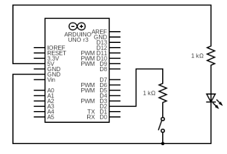
To power our LED arcade button for our interaction sequence, we connected the LED to 5 V and ground (the button also had an internal resistor). To receive signals from the button switch, we connected the switch of the digital 2 pin of the Arduino and a 1kΩ resistor to the ground. To power and control our servos for our interaction sequence, we utilized an Adafruit Motor Shield with the computer as a power source, taking advantage of both the Arduino’s PWM pins and the Adafruit’s specialized servo pins. We connected the servos to 5V and ground; for the data signal, we then used SERVO 0 from the Adafruit Motor Shield for the head tilt servo and PWM D3 for both arms.

For the LED back wall, we created an LED display that fades in and out to mimic stars. We used RGB Multicolor Diffused LEDs which have four pins: one for ground, and one for red, one for green, and one for blue. With the three colors in one LED, we created a shifting color effect depending on the viewer’s angle and added depth to their overall pinkish color, set using a 2kΩ resistor for the red pins and a 10kΩ resistor on each blue and green pin. Since the Arduino only has a limited number of PWM pins, each of the 20 LEDs is wired to one of five groups, which are on a cycle to each blink every few seconds, and controlled by an Arduino Nano connected with perfboard via soldering. Because of the limitation on the number of available pins, each LED group is spread out across the wall to make the blinking look more random. To simplify the visual, only one of four LEDs in each of the five groups is represented in the circuit diagram.
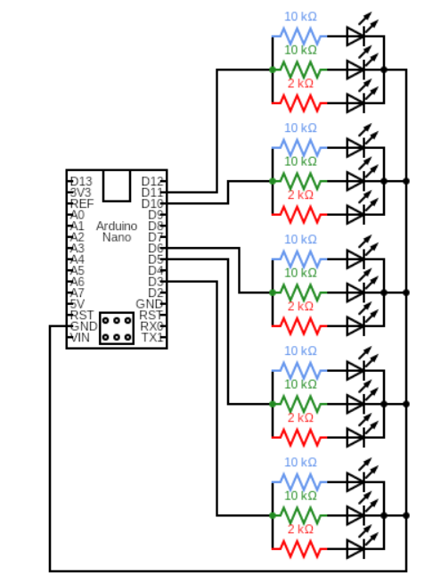
Finally, the lotus flower is also lit by the same type of LEDs on a separate Arduino Nano system: two LEDs are hidden inside the flower, each transitioning between shades of magenta by gradually changing the signal sent to the red pin on one LED and to the blue pin on the other.
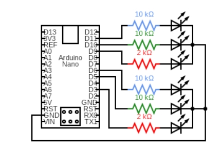
One challenge we had for electrical components was power management. We initially had five servos–right arm, left arm, pan, tilt, and torso–connected to two specialized servo pins and one digital PWM pin with an external power source regulated by a DC-DC Buck converter. When we tried to execute the motion diagram with our original servo configuration the motors were simply pulling too much current. Thus, we had to switch out our original torso servo for a servo that required less current. However, the discharge from the DC-DC Buck converter rendered several pins of our original Arduino Uno useless, and one of our servos fried and stopped receiving signals due to the discharge. Therefore, to resolve power management issues, we reduced our servos from five servos to three servos, removing the torso and pan servo–and for the arms, we attached both signal cables to one PWM signal pin. This change allowed us to stop using an external power source and replace that power source with a computer power source.
The mechanical components of our project took on two manifestations– aesthetic and utilitarian.The general approach was to prioritize aesthetics and build utilitarian components around the ensuing constraints. Thus, we started by designing the box that houses Fred. The box had to look good, but also provide ample room for discrete circuitry, Servos, speakers, etc. Another point of consideration is that we wanted the box to be relatively life-size to remain true to the vintage fortune telling machines that Fred is based on. Thus, we used CAD to design a 3ftx2ftx5ft box with ample room to place hidden electromechanical components, but an almost unobstructed view of Fred and his swamp environment. This design required the purchase of 96 sq. ft. of plywood, and heavy use of the ShopBot. The box was designed in Solidworks, and the Solidworks file was converted to a Solidworks drawing for use on the ShopBot. To stay within budget, we bought the cheapest plywood stock at Home Depot, which was extremely warped. This made construction and ShopBotting of the wood very difficult– if we had an unlimited budget, we would have bought higher quality stock. The box, seen below, was based on the classic Zoltar box. Making the box life size ultimately made it easier for mechanical and electrical teams to integrate. It has a platform for Fred to sit on, a table for his lotus flower, a hidden compartment under his table for speakers and/or Arduinos, and a large hidden compartment on the bottom of the box to house most of the electrical components. After having its design cut into it via ShopBot, we constructed the box using screws and hinges where applicable. Below is the CAD rendering of our box design.

The mechanical sub team also constructed the structure and articulation for the Fred animatronic. Fred was designed to have 5 points of articulation: one at his torso, one for each arm, and a pan/tilt mechanism for his head. Each of these points of articulation required a unique Servo mount design.
We experimented with different methods of moving Fred’s arms. One method was a pulley system that transformed rotational motion to linear motion to lift his arms up– similar to a marionette. The servo would rotate to wind up a string using a ‘reel’, pulling the attached arm up with it. CAD renderings and drawings of the pulley system are shown below.
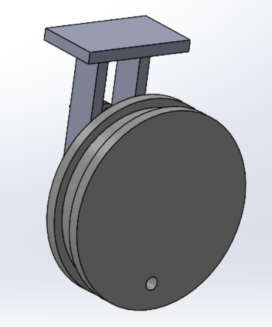
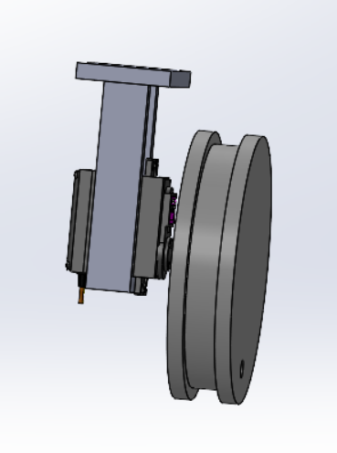
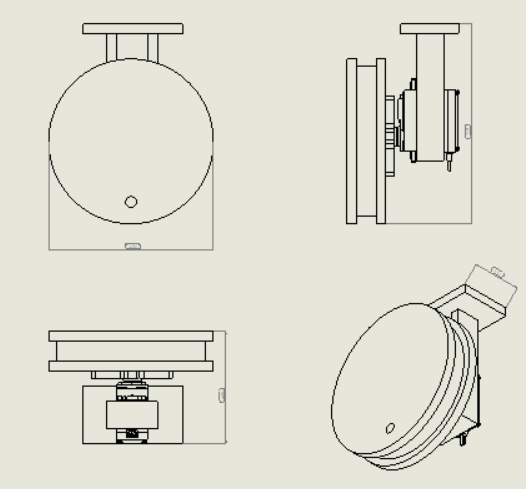
Another method we tried was a cam and dowel system. In this system, the dowel would be fixed to the rotating cam, and would push the arm up in a cyclical fashion. A CAD rendering and drawing of the cam and dowel system is shown below.
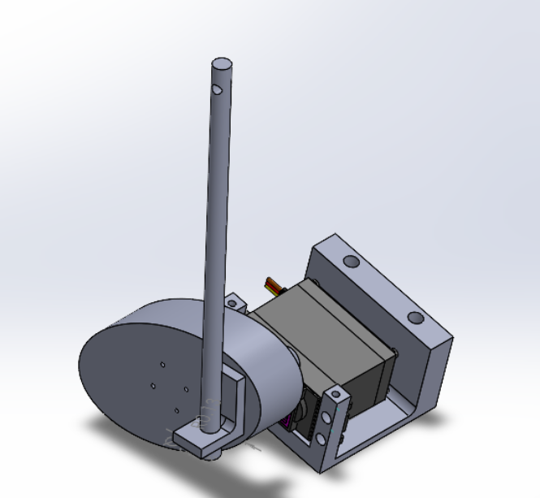
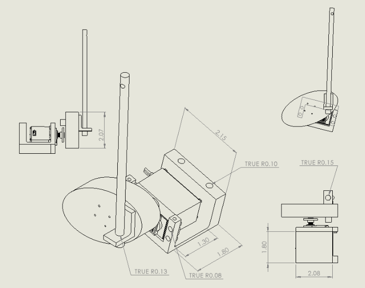
Both mechanisms initially worked well, so we initially intended on using both mechanisms, one for each arm. However in the final stage of integration, the arm became too heavy for the dowel to move up properly. Thus, for the final product we had two pulley systems.
For Fred’s torso, we laser cut a 12”x10” servo mount box. The size of the mount would help balance the size of Fred himself. The mount, however, needed support to balance the weight of the body. Weight balancing of the torso was a large issue in terms of mechanical design. We had to expand our point of contact between the torso and the mount through supports, though our original supports did not successfully hold up the weight. They were plastic and in a helical shape, so we pivoted to aluminum sheet metal in sled shape.
These supports were made from aluminum sheet metal to weigh down the skeleton and ensure the body would not tilt forward or backwards while rotating. Below is a CAD rendering of the torso servo mount.
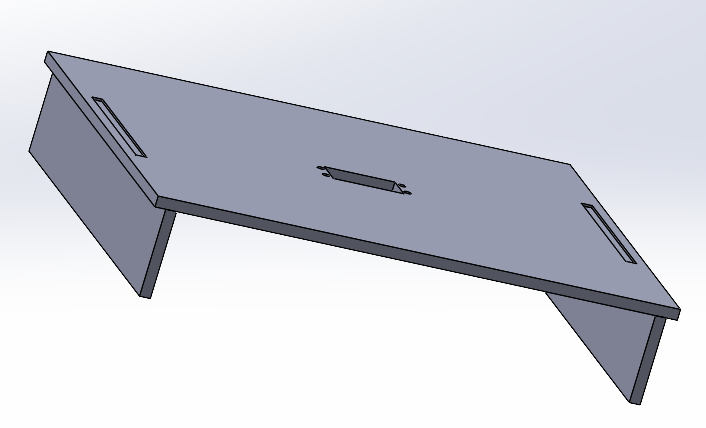
The pan/tilt mount for the head, shown below, has two points of articulation. One articulation pans the head left and right, and one pans the head up and down. The tilt mechanism relies on a pin joint held by a hinge. The pan mechanism is on a vertical axis, and connected to a head mount. This head mount was developed after initially trying to connect the head to the servo horn without an intermediate mount. This resulted in the head being very wobbly, so we redesigned a head mount to maximize point of surface contact between the servo and the head. This allowed for the head to pan without falling off of the servo. Another issue with the pan/tilt mechanism was securing the tilt servo. The tilt servo was often shaken off of its mount by the load applied from the head's torque as it tilted. We reinforced the servo to reduce this from happening, but this was the largest source of failure from the system. This mechanism was attached to the animatronic skeleton via nuts and bolts, and effectively served as its neck. Below are CAD renderings and a Solidworks drawing of the pan/tilt mechanism.
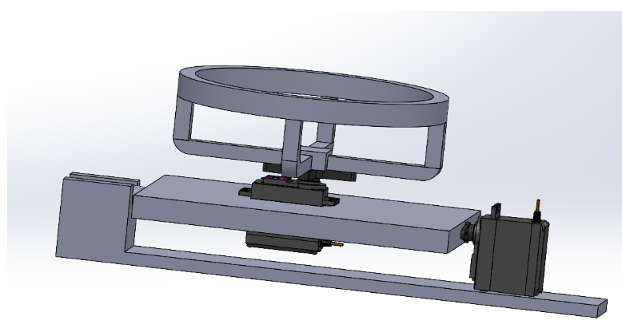
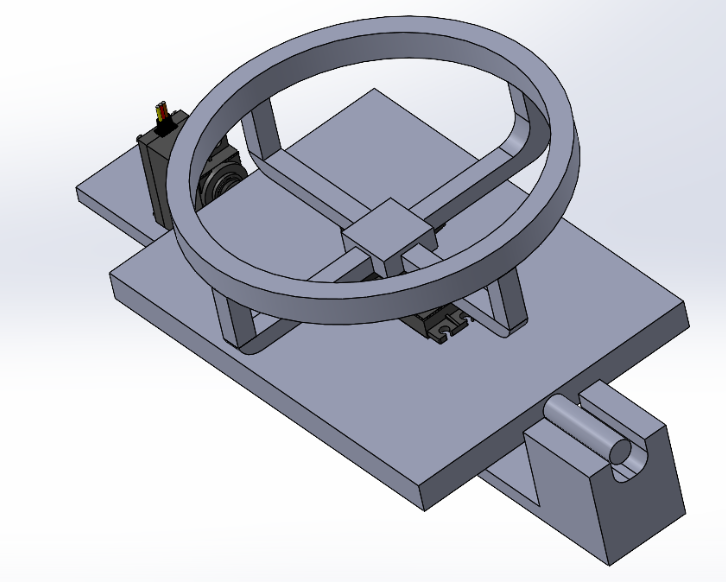
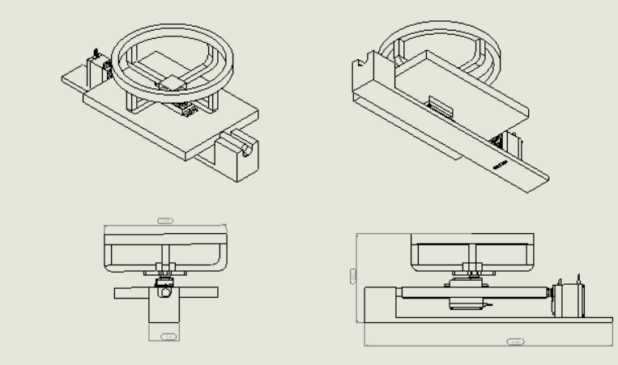
The button to activate Fred's electrical and software components required a 3D printed mount. To be an effective mount, there had to be little tolerance between the button and the mount. Thus, we used the specification sheet for the button to get a tolerance within .05 in. This mount was placed in a hole pre-cut in the box via Shopbot. At first we tried to just place the button in the hole pre-cut for it, but the Shopbot tolerances were not enough. Thus, we had to print this mount to bridge the tolerance gap. Below is a CAD rendering of the button mount.
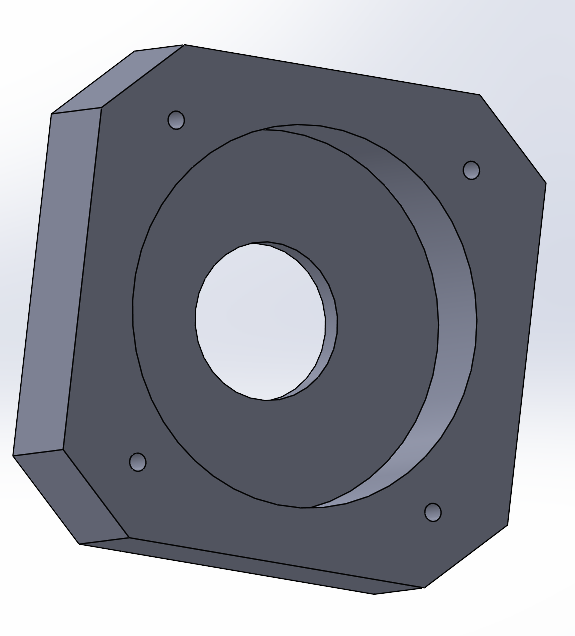
Our main firmware component is our interaction sequence. To program our interaction sequence, we created four states for each time the button is pressed. More specifically, a counter initialized to zero would be incremented by 1 each time the button is pressed – and the modulus of that number divided by 4 would define the state (from state 0 to state 3). At states zero and two, the tilt servo would stabilize to 70 degrees and all the servos would stop moving. At states one and three, a motion sequence that sweeps the arm servos from 10 degrees to 150 degrees and the tilt servo from 60 degrees to 70 degrees would begin.
We also required the Serial port as a signal for the Python script controlling the software on top of the firmware. When the button tracker is zero, none of the servos are moving and Fred is stationary (state 0). When the user presses the button, the button tracker variable’s value is 1 (state 1), and the servos start moving, which makes Fred’s head and arms move. While Fred is moving, the Python script plays a recording of our voice actor, Luke Whitten, which asks how the user is doing. The user presses the button again, which adds one to the button tracker variable (state 2) and starts a recording. Once the user finishes their answer, they may press the button again (state 3) to end the recording. Based on the user’s answer, a fortune is then selected (this process is explained more thoroughly in the software section) and Fred says the user’s fortune while the servos are moving in the same way they did in the previous stage. The user then presses the button again, which adds one to the button variable tracker (state 0), to stop Fred’s movement and make him stationary again.
A challenge we encountered when working on this component of our project was when we tried to integrate a Raspberry Pi. When we wired the data cable from the Arduino to the Raspberry Pi, the Arduino was pulling in too much current from the Raspberry Pi. With lower current for the Raspberry Pi due to the Arduino, the Serial connection between the Raspberry Pi and Arduino slowed down, causing the Python script and servos to respond improperly to button presses. As a consequence, we were forced to switch to a computer instead of a Raspberry Pi.
The libraries we imported were the servo library, the button library, and the RGBled library.
Our GitHub is here: https://github.com/CapeGenius/animatronic-fortune-teller
The main software design component of our project centers around user design. We used a Python listener class with a method containing a while loop that processed the Arduino Serial data in real-time. Based on the state induced by the button press, the Python listener will perform a different action.
This Python listener class also has two attributes: an initialized Player class and initialized Recorder class. The initialized Player class has a wav file attribute to play any audio file by running a run() function as an asynchronous thread. On the other hand, the initialized Recorder class has two functions: start() and stop(). The start() function starts a Thread that starts a microphone recording until the stop() function is run – which stops the initial start() function.
When the while loop reads a 1 from the Serial connection after a button is pressed, the Python listener uses the Player object to play Luke’s greeting (“I’m Fred the Fortune Telling Frog. Take a leap of faith. How are you doing today?”). (Note: The servos also start moving through their motion sequence as well.)
When the while loop reads a 2 from the Serial connection, the Recorder object runs its start() function to begin the asynchronous recording thread. The recording continues until the Serial data receives a 3 after another button press.
Once the button press receives a 3, the stop() ends the asynchronous thread to stop the recording. Then, the audio file from the recording is sent to Whisper AI using a GroqCloud API to process the speech into text using a transcription() function from a whisper_live.py file. Once the API returns the transcribed text, we send the transcribed text to Google Cloud Natural Language API to perform sentiment analysis on the transcription using an analyze_sentiment() function from the sentimental_analysis.py file. The API thus assigns the transcribed text a score from -1 to 1. The more negative the score is the more negative/sad the sentiment is, the more positive the score is the more positive/happy the sentiment is, and if the sentiment is neutral the score is closer to zero. If the sentiment analysis score is between -0.25 and -1, the user’s state is assigned as negative. If the sentiment analysis score is between -0.25 and 0.25, the user’s state is assigned as neutral. If the sentiment analysis score is between 0.5 and 1, the user’s state is assigned as positive.
Based on the user’s sentiment (positive, negative, or neutral), we randomly select a recording file from the corresponding sentiment folder (positive, negative, neutral folders) in the recordings folder. From there, we initialize another Player class to play the selected recording.
Our main challenge in this section was creating live recording using multithreading. We had no experience with using multithreading; however, we were able to learn how to start, stop, and lock threads to asynchronously run processes. As a result, we were able to make one button press start a recording and another button press end a recording.
Another challenge was integrating the Google Cloud Natural Language API. We struggled with setting up a local ADC (Authentication Default Credentials) file to run Google Cloud Natural Language API from our local computers. Debugging this issue took several hours due to unclear documentation and Google Cloud API is usually run on an online console, but we figured out that we needed to update our local ADC file to include a specific project. With this, we were able to make API calls from the laptop in use.
Software System Diagram
Software dependencies: OpenAI’s Whisper and the Google Cloud Natural Language API
Our GitHub is here: github.com/CapeGenius/animatronic-fortune-teller
A big goal of our project was to make it an immersive experience, which meant we needed to focus on aesthetic components and the full presentation of the project. In order to achieve this goal, we painted the inside of Fred’s box, created an LED constellation wall, created a lotus flower instead of a crystal ball, and constructed and painted Fred’s head.
Fred’s Box
We painted the inside of the box mainly black with some blue and white streaks to make it look like the night sky. It was a really big part of bringing the aesthetic component together. The outside of the box was stained with cherry wood stain and shellac. The below picture shows the wood stain and the paint on the ceiling and back wall.
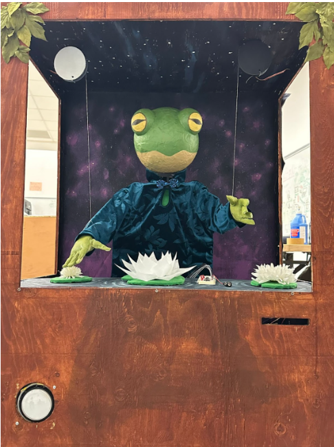
LED Constellation Wall
The LED constellation wall was painted black with purple. The LEDs used for this were RGB Multicolor Diffused LEDs and we discuss how they are electrically integrated with our project in a later section. The LEDs fade in and out to mimic stars. Below is a picture of the wall.
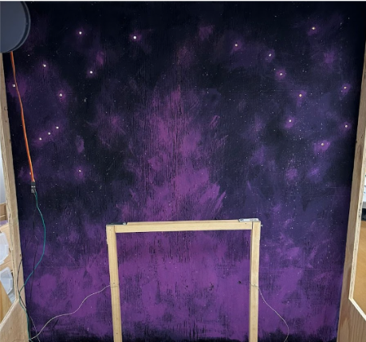
Lotus Flower
Instead of a crystal ball, we decided that Fred should have a lotus flower that he uses to help tell his fortune. We made the lotus flower out of white sheer fabric hot glued together to resemble a flower. In the center, we use the same RGB Multicolor Diffused LEDs (with different resistor values so that it is magenta) wired to an Arduino Nano. There is more information about the way this is wired to our system in the later section. A picture of the lotus flower is below.
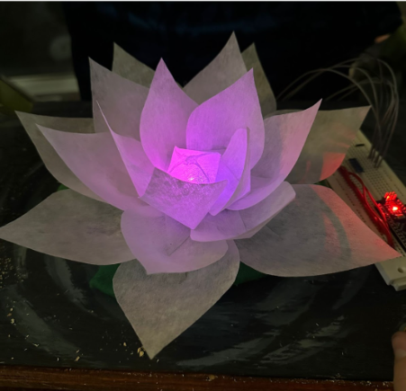
Fred’s Head
Fred’s head is made out of a styrofoam ball which was hollowed out (so that it could be lighter), covered with paper tape, and painted to look like a frog head. A picture of his head is below.

This site was created with the Nicepage